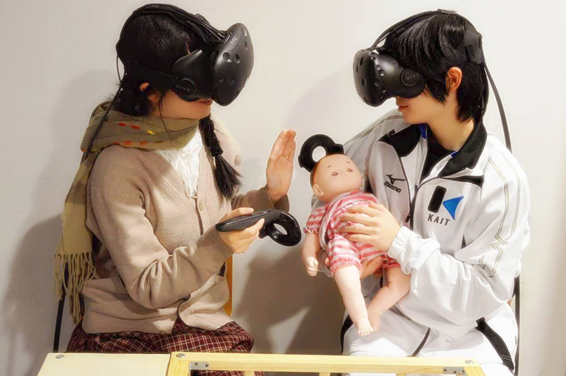

2017年秋の展示・発表ラッシュについてお知らせ
秋です！発表シーズンです！
東京ゲームショー(幕張メッセ)、日本VR学会大会(徳島)＆DCEXPO2017(日本科学未来館)での発表予定について、まとめてお伝えいたします。
東京ゲームショー2017
2017年9月21日〜24日 幕張メッセ 国際展示場9-11 CEDECブースにて「Real Baby – Real Family」を展示します。
会場全体図
昨年と同じくインディゲームコーナーの奥です、図中右。

IVRC実行委員会およびIVRC2016「ミミトンネル」さんご機会をいただきありがとうございます。
今日から一般日です！#TGS2017 pic.twitter.com/i3VGvOtZBm
— Yuya Mochizuki (@Mochi_0317) September 23, 2017
日本VR学会第22回大会(徳島)
開催日 2017年 9月27日（水）～9月29日（金）
開催場所 徳島大学工学部 常三島キャンパス
〒770-8506 徳島県徳島市南常三島町2-1
大会ホームページ
https://conference.vrsj.org/ac2017/

発表予定タイトル一覧
- 働き方改革のためのVR技術(第1報)子育て就業環境改善にむけた調査「テレ育児スタンス」
- 複数のVRエンタテイメントシステムを接続する体験評価手法「MasQueRade」の提案
- 乳幼児保育VR学習から考察する体験型教育の展開と課題
- 現実拡張型子育てVRエンタテインメントの
センサスーツによる拡張「Real Baby – Smart HIP 」 - 裸眼多重化映像技術(第3報): デジタルサイネージと連動するインタラクティブな知的コントローラ「Project JARVIS」
- MARUI:ゲームプレイヤーのためのMR/ARによる利便性向上ツールの提案
- A.I.Show:VRアバタによる非同期型コミュニケーションの提案
- 「Manga Generator JUMP VR」の海外展示を通したHMD不使用VRエンタテイメントシステムの可能性
デジタルコンテンツエキスポ2017
今年もデジタルコンテンツエキスポ(DCEXPO2017)に出展が決まりました。
Laval Virtual 2018
Laval Virtual は、VRやARの先端技術やインタラクティブメディアにおけるヨーロッパ最大のコンベンションです。見本市、アワード、国際会議VRIC、学生コンテスト、国際公募デモ展「ReVolution」、スタートアップ支援、コンテンツショーケース等多数のイベントで構成されており、1999年から毎年、フランス西部の Laval で開催されています。次回は2018年4月4～8日に開催予定です。ブースでは、Laval Virtual ReVolutionで展示され、国際賞を受賞した「Real Baby – Real Family」を紹介します。
Real Baby – Real Family

「Real Baby – Real Family」は体験者の顔画像から生まれてくる赤ちゃんの顔を予測し、VR空間内であやすことのできるVR体験です。「Real Baby – Real Family」は1. 1人または2人の体験者の顔画像から機会学習と画像処理を用いて赤ちゃん顔画像を生成し、VR空間内で使用する技術2. ヘッドマウントディスプレイを装着したまま、赤ちゃんモップアップを抱擁することができる。3. 音声に同期した触覚をユーザに提示し、VR空間内の赤ちゃんを本当の赤ちゃんのように感じることができる技術で構成されています。また、赤ちゃんの音声は実際の赤ちゃんの泣き声をサンプリングしており、現実感を高めています。
皆様と会場でお会いできます事を楽しみにしております。